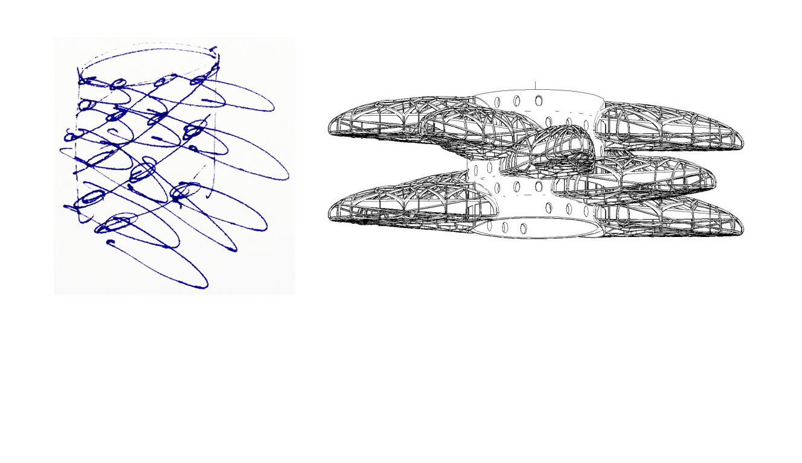

PHILLOTACTIC TOWERS
- Saleh Masoumi
- Verk studio, Iran
- 2012
The phillotactic tower design applies the concept of phyllotactic architecture to residential units. It allows each unit to have a yard and exposure to open sky.
"A house without a yard is not a house" - Saleh Masoumi. In future designs of buildings, all units could have access to an open yard and sunlight. Studies of plant life have shown that patterns made by the leaves and the stem allow for maximum absorbtion of recources like light and water. This concept has inspired architects to design buildings that resemble plants, incorporating a vertical stem with branching units.

phillotactic patterns spiral out from a central point

a study of plant life shows how these patterns maximize the plant's exposure to sunlight
buildings designed to imitate these patterns have varying vertical and horizontal branches around a central axis
